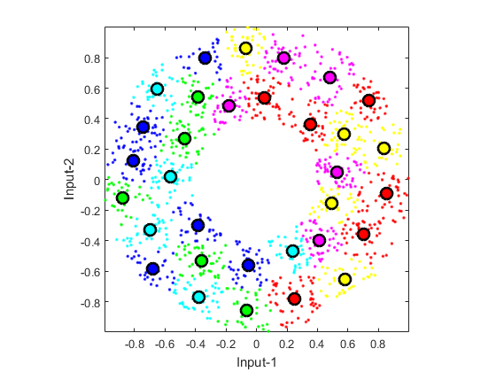

Vector Quantization
Vector quantization (VQ) can be viewed as an efficient techniques for k-means clustering, especially when the desired number of clusters is big. VQ is primarily designed for lossy data compression, particularly for image compression. A vanilla algorithm for VQ is:
- Set the number of clusters n = 1.
- Run k-means clustering with the number of clusters equal to n.
- If n is equal to or greater than the desired number of clusters, stop.
- Split each of the cluster centers into two by adding and subtracting a small random vector. Now n is twice the original value.
- Go back to the second step.
Contents
A basic example
The following example demonstrates the dendrogram after agglomerative hierarchical clustering.
DS=dcData(2); data=DS.input; codeBookSize=2^5; codebook=vecQuantize(data, codeBookSize);
No. of centers = 2, loop count = 5, distortion = 429.125 No. of centers = 4, loop count = 18, distortion = 161.651 No. of centers = 8, loop count = 15, distortion = 68.4784 No. of centers = 16, loop count = 18, distortion = 36.5395 No. of centers = 32, loop count = 33, distortion = 16.7846
Visualization of the clustering process
If you want to see the animation of the clustering process, try the next example:
DS=dcData(2); data=DS.input; codeBookSize=2^5; codebook=vecQuantize(data, codeBookSize, 1);
Iteration count = 1/200, distortion = 690.587380 Iteration count = 2/200, distortion = 428.551764 Iteration count = 3/200, distortion = 428.358288 Iteration count = 4/200, distortion = 428.215900 Iteration count = 5/200, distortion = 428.024041 Iteration count = 6/200, distortion = 427.832301 Iteration count = 7/200, distortion = 427.590063 Iteration count = 8/200, distortion = 427.217333 Iteration count = 9/200, distortion = 426.615464 Iteration count = 10/200, distortion = 426.107004 Iteration count = 11/200, distortion = 425.868657 Iteration count = 12/200, distortion = 425.655512 Iteration count = 13/200, distortion = 425.348163 Iteration count = 14/200, distortion = 425.187664 Iteration count = 15/200, distortion = 425.034010 Iteration count = 16/200, distortion = 424.959160 Iteration count = 17/200, distortion = 424.880821 Iteration count = 18/200, distortion = 424.764715 Iteration count = 19/200, distortion = 424.673286 Iteration count = 20/200, distortion = 424.370534 Iteration count = 21/200, distortion = 424.163340 Iteration count = 22/200, distortion = 424.093794 Iteration count = 23/200, distortion = 424.066449 Iteration count = 24/200, distortion = 424.066449 No. of centers = 2, loop count = 24, distortion = 424.066 Iteration count = 1/200, distortion = 424.066449 Iteration count = 2/200, distortion = 195.877346 Iteration count = 3/200, distortion = 159.592655 Iteration count = 4/200, distortion = 158.735069 Iteration count = 5/200, distortion = 157.954229 Iteration count = 6/200, distortion = 157.429290 Iteration count = 7/200, distortion = 157.135922 Iteration count = 8/200, distortion = 157.001303 Iteration count = 9/200, distortion = 156.771159 Iteration count = 10/200, distortion = 156.501471 Iteration count = 11/200, distortion = 156.436167 Iteration count = 12/200, distortion = 156.326373 Iteration count = 13/200, distortion = 156.269453 Iteration count = 14/200, distortion = 156.231388 Iteration count = 15/200, distortion = 156.207742 Iteration count = 16/200, distortion = 156.200181 Iteration count = 17/200, distortion = 156.198812 Iteration count = 18/200, distortion = 156.198812 No. of centers = 4, loop count = 18, distortion = 156.199 Iteration count = 1/200, distortion = 156.198812 Iteration count = 2/200, distortion = 78.434380 Iteration count = 3/200, distortion = 68.245475 Iteration count = 4/200, distortion = 66.344368 Iteration count = 5/200, distortion = 65.940080 Iteration count = 6/200, distortion = 65.849693 Iteration count = 7/200, distortion = 65.829122 Iteration count = 8/200, distortion = 65.814827 Iteration count = 9/200, distortion = 65.814058 Iteration count = 10/200, distortion = 65.814058 No. of centers = 8, loop count = 10, distortion = 65.8141 Iteration count = 1/200, distortion = 65.814058 Iteration count = 2/200, distortion = 40.373204 Iteration count = 3/200, distortion = 38.664770 Iteration count = 4/200, distortion = 37.816128 Iteration count = 5/200, distortion = 37.518858 Iteration count = 6/200, distortion = 37.394933 Iteration count = 7/200, distortion = 37.316002 Iteration count = 8/200, distortion = 37.288735 Iteration count = 9/200, distortion = 37.267639 Iteration count = 10/200, distortion = 37.242818 Iteration count = 11/200, distortion = 37.204373 Iteration count = 12/200, distortion = 37.081633 Iteration count = 13/200, distortion = 36.950368 Iteration count = 14/200, distortion = 36.886225 Iteration count = 15/200, distortion = 36.872117 Iteration count = 16/200, distortion = 36.870591 Iteration count = 17/200, distortion = 36.870591 No. of centers = 16, loop count = 17, distortion = 36.8706 Iteration count = 1/200, distortion = 36.870591 Iteration count = 2/200, distortion = 21.306238 Iteration count = 3/200, distortion = 17.979697 Iteration count = 4/200, distortion = 16.984388 Iteration count = 5/200, distortion = 16.711866 Iteration count = 6/200, distortion = 16.525610 Iteration count = 7/200, distortion = 16.405035 Iteration count = 8/200, distortion = 16.321214 Iteration count = 9/200, distortion = 16.248808 Iteration count = 10/200, distortion = 16.182354 Iteration count = 11/200, distortion = 16.123574 Iteration count = 12/200, distortion = 16.094895 Iteration count = 13/200, distortion = 16.057599 Iteration count = 14/200, distortion = 16.045014 Iteration count = 15/200, distortion = 16.043539 Iteration count = 16/200, distortion = 16.042737 Iteration count = 17/200, distortion = 16.041770 Iteration count = 18/200, distortion = 16.041770 No. of centers = 32, loop count = 18, distortion = 16.0418
Reference
Y. Linde, A. Buzo, and R.M. Gray, "An Algorithm for Vector Quantizer Design", IEEE Transactions on Communications, vol. 28, pp. 84-94, 1980.
Copyright 2011-2016 Jyh-Shing Roger Jang.